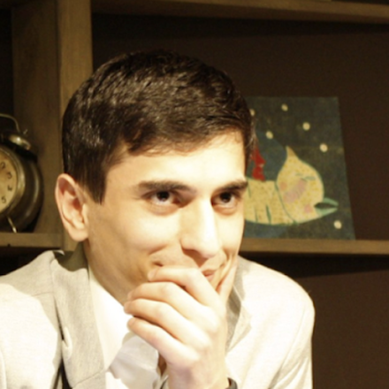

Почти все большие предпринимательские возможности приходят через людей. Клиенты, партнёры, инвесторы, сильные сотрудники, выход на новый рынок: всё это чаще появляется из отношений, чем из рекламы.
Поэтому рано или поздно предприниматель приходит к мысли, что пора заниматься именем, репутацией и связями. И почти сразу упирается в вопрос, на который нет универсального ответа: какие именно связи, с кем и ради чего.
Обычно на этом месте начинают действовать наугад. Вступают в клубы, ходят на конференции, запускают канал, нанимают пиарщика. Набирается активность, но не капитал. Социального капитала вообще, отдельно от замысла, не существует. Есть только конкретные люди, конкретное доверие и конкретный доступ, которые нужны под конкретную задачу.
Почему нельзя начать сразу с людей?
Чтобы понять, какой социальный капитал вам нужен, придётся начать раньше. С того, куда вы идёте, где стоите сейчас, что происходит вокруг и каким маршрутом туда добираться.
Это не отступление от темы, а обязательное условие. Пока нет ответа на эти четыре вопроса, невозможно сказать, какие люди должны вас знать, за что именно и какой уровень доверия нужен. А без этого любые знакомства остаются просто знакомствами.
Поэтому сначала четыре вопроса стратегии, потом социальный капитал под них, и только в самом конце инструменты.
Куда мы хотим прийти?
Этот вопрос раскрывается на двух уровнях: видение и замысел. Это не одно и то же, и путать их дорого.
Видение
Видение это долгосрочный образ желаемого будущего, горизонт условно десять-двадцать лет. Оно отвечает на вопросы: каким человеком я хочу стать, какую жизнь построить, чем заниматься, с какими людьми быть связан, какую роль играть в своей отрасли и что должно остаться после меня.
Видение не обязано быть измеримым. Это не точка назначения и не бизнес-план. Это направление, относительно которого можно оценивать разные замыслы и решения. Например: стать международным предпринимателем в ресторанной индустрии, создавать сильные проекты, жить между несколькими странами, работать с людьми высокого уровня и влиять на развитие отрасли.
Замысел
Замысел это ближайший большой проект, через который реализуется видение, горизонт условно три-десять лет. В отличие от видения, у него уже есть конкретика: что должно быть создано, где, к какому сроку, какого масштаба и с каким результатом. Например: к 2034 году построить ресторанный холдинг в странах Залива.
Видение это направление жизни. Замысел это следующий большой проект на этом пути.
Где мы находимся сейчас?
Здесь оценивают текущую позицию. Это не перечень того, что у человека есть. Задача понять, на что действительно можно опереться, когда будете строить маршрут.
Ресурсы мало перечислить. Их нужно взвесить
Каждый ресурс стоит проверить как минимум по двум шкалам.
Первая: насколько его трудно повторить. Многолетнюю экспертизу, редкую комбинацию компетенций, сильную личную репутацию, подтверждённые результаты, собственную методологию, глубокие отношения и доступ в закрытые сообщества скопировать тяжело. Аккаунт с подписчиками, купленный трафик и модный формат повторяются за месяц. Чем труднее ресурс повторить, тем сильнее потенциальное преимущество.
Вторая: насколько ресурс устойчив к изменению среды. Что с ним будет, если поменяется рынок, регулирование, страна, экономика, технологии, алгоритмы платформы, поведение потребителей. Бизнес, который держится на одной соцсети, стоит ровно до следующей смены алгоритма. Экспертиза, репутация и сеть доверия переносятся между рынками и сохраняют ценность гораздо дольше.
В основу стратегии закладывают ресурсы, которые одновременно трудно повторить и которые не обесцениваются при смене среды.
Остальные ресурсы тоже используют. Но нельзя строить долгосрочную стратегию преимущественно на том, что легко скопировать, быстро обесценивается, полностью зависит от одного рынка или исчезает после изменения среды.
Сначала оцени позицию, потом ходи
Принято думать, что сильный шахматист выигрывает, потому что считает на двадцать ходов вперёд. Но само по себе количество просчитанных ходов ничего не даёт.
Сначала мастер оценивает позицию: где фигуры стоят хорошо, где ограничены, у кого инициатива, какие поля слабые, какие угрозы висят, какие комбинации становятся возможны. И только потом считает конкретные варианты. Если позиция оценена неверно, можно очень глубоко и красиво просчитать ошибочное направление.
У предпринимателя всё то же самое. Сначала честная оценка позиции: какие ресурсы действительно сильны, на какие можно опереться, что трудно повторить, что сохранит ценность в изменившейся среде. Ход только потом.
Что происходит во внешней среде?
Внутренняя позиция существует не в вакууме. Один и тот же набор ресурсов стоит по-разному в разных странах, на растущем и падающем рынке, в разные периоды, при разном уровне конкуренции. Поэтому среду анализируют отдельно. Здесь помогает логика PESTEL.
Отдельно смотрят на растущие и падающие рынки, крупные инфраструктурные проекты, государственные инвестиции, международные мероприятия, новые центры капитала и долгосрочные тренды.
Главный вопрос к среде один: где наши ресурсы дадут непропорционально большой результат.
Иначе говоря, где возникает асимметрия между тем, что у нас уже есть, и тем, насколько сильно это нужно рынку. Одна и та же ресторанная экспертиза стоит одну цену в перегретом рынке и совсем другую там, где рынок быстро растёт, но испытывает дефицит сильной экспертизы.
Какой маршрут приведёт к цели?
После того как понятны замысел, позиция и внешняя среда, можно проектировать маршрут. И вот здесь ломается почти всё.
Маршрут это не список направлений вроде «развивать консалтинг, строить публичность, выходить на международный рынок». Это последовательность конкретных промежуточных позиций, каждую из которых можно увидеть и проверить.
Разница видна на примере. Предприниматель хочет за несколько лет построить ресторанный холдинг на рынке Залива. «Развивать публичность» это не маршрут. А вот это уже маршрут:
Каждую точку можно потрогать, проверить и использовать как новую стартовую позицию для следующей.
Как выбирают следующую точку?
Не потому, что она ближе всего. Промежуточная позиция должна отвечать сразу нескольким критериям.
Одно правильно выбранное выступление даёт сразу клиента, контент, знакомства, репутацию и приглашение на следующую площадку.
Маршрут остаётся гибким
Маршрут не высекают в камне. После каждой новой позиции меняется сама позиция: появляются люди, предложения, информация, открываются партнёрства, меняются рынки, исчезают старые ограничения и возникают новые риски.
Поэтому маршрут регулярно пересобирают. Главный вопрос на каждом шаге: не появилась ли из новой позиции более простая, быстрая, сильная или менее рискованная возможность реализовать замысел. Здесь снова работает шахматная логика: хороший ход не просто даёт локальный результат, он меняет позицию так, что сильных продолжений становится больше.
Стратегия это не следование однажды написанному плану. Это постоянное проектирование маршрута по мере того, как меняется позиция.
Что на самом деле ускоряет маршрут?
После того как маршрут спроектирован, возникает вопрос, который для предпринимателя решает почти всё. Что позволит пройти этот маршрут быстрее, с меньшим сопротивлением и большей вероятностью успеха.
Ответ почти всегда один: люди.
Клиенты, партнёры, инвесторы, сильные сотрудники, рекомендации, информация, доступ на новые рынки, совместные проекты, государственные связи приходят через людей. Даже технологическое преимущество не возникает само по себе: для него нужны специалисты, инвесторы, первые клиенты и доверие рынка.

Большинство предпринимательских возможностей приходит через людей.
Это и есть социальный капитал. И его главное свойство надо понять точно: он не заменяет остальные ресурсы, он их умножает. Экспертиза без доверия остаётся невостребованной. Сильная идея без людей не доходит до реализации. Технология без команды и клиентов не выходит на рынок. Социальный капитал ускоряет превращение всего, что у вас уже есть, в реальный результат.
Обратите внимание, это умножение, а не сложение. При нуле в правом множителе результат остаётся нулём, каким бы сильным ни было всё остальное.
Социальный капитал это мультипликатор остальных ресурсов предпринимателя.
Это не подписчики
Социальный капитал это не количество контактов в телефоне и не число подписчиков. Это система из отношений, доверия, репутации и доступа, благодаря которой предприниматель быстрее привлекает людей и ресурсы под свой замысел. Тысяча подписчиков, которые вас не знают, не дадут ни одной сделки. Десять человек, которые за вас ручаются, меняют траекторию.
Строим не известность, а конкретный капитал
Отсюда следствие, которое ломает привычную логику. Мы строим не «известность вообще». Мы строим конкретный социальный капитал под конкретный маршрут.
Вопрос не «как стать известным», а: какие люди должны вас знать, за что именно, какой уровень доверия нужен, в каких сообществах надо присутствовать, чьи рекомендации ценны и какой образ нельзя создавать, даже если он принесёт быстрые деньги.
Потому что накопление идёт сразу по двум горизонтам. Каждое действие оценивают по двум вопросам: что оно даёт сейчас (деньги, клиент, выступление, сделка) и что оно создаёт для следующего этапа (кейс, доверие, доступ, репутация, вход в сообщество). Сильное действие отвечает на оба.
Каждое действие должно одновременно давать результат сегодня и создавать актив для следующего этапа.
Выступление ведёт к консалтинговому проекту, проект даёт локальный кейс, кейс приносит рекомендации, рекомендации открывают отношения с инвесторами, а те делают возможным партнёрский ресторан. Это не воронка продаж. Это лестница накопления активов, где каждый виток делает достижимым следующий.
Проектирование взаимной ценности
После того как мы определили замысел, проанализировали свою позицию и поняли, какие ресурсы понадобятся для реализации стратегии, возникает следующий вопрос: как создать такую ценность, чтобы носители этих ресурсов сами были заинтересованы в сотрудничестве.
Именно здесь большинство предпринимателей начинает искать знакомства, выходить на нужных людей или усиливать публичность. Но это попытка решить проблему с конца. Гораздо важнее сначала найти точку максимальной взаимной ценности.
С одной стороны мы изучаем себя. Собственные активы, и не только то, что у нас уже продаётся, а весь потенциал, которым мы располагаем. Мы раскладываем каждый актив на составные части, поднимаемся на более высокий уровень абстракции и ищем, где ещё его можно применить, во что превратить и для кого каждая из этих составляющих может быть особенно ценной.
Например, предприниматель говорит: «я владелец ресторанной сети». Но стратегия начинается не с этого. Мы начинаем разбирать этот актив.
Каждый из этих микроактивов может оказаться самостоятельной ценностью для совершенно разных категорий людей.
С другой стороны мы анализируем тех, кто обладает необходимыми нам ресурсами. И задаём совсем другие вопросы.
И только после этого начинается стратегия. Мы не пытаемся продать то, что уже умеем. Мы ищем максимальное совпадение между двумя системами. Первая это наши активы, сильные стороны и потенциал. Вторая это потребности, интересы, задачи и ресурсы другой стороны.
Именно в точке их пересечения появляется настоящая возможность. Не просто продажа. Не просто знакомство. А взаимовыгодное сотрудничество.
По сути, стратегия здесь строится не вокруг вопроса «как познакомиться с нужным человеком».
Какую форму должна принять наша экспертиза, чтобы стать максимально ценной для человека, обладающего нужными нам ресурсами?
Именно эта логика позволяет создавать сильные партнёрства, получать доступ к новым возможностям и формировать социальный капитал не случайно, а осознанно.
Социальный капитал не возникает из знакомств. Он возникает из системного обмена ценностью.
Чем точнее мы понимаем, чем действительно обладаем, что представляет ценность для другой стороны и как соединить эти две системы, тем легче возникают доверие, партнёрства, рекомендации и доступ к новым ресурсам.
Именно поэтому в основе стратегии лежит не поиск контактов, а проектирование взаимной ценности. Из неё уже естественным образом рождаются отношения, а отношения постепенно превращаются в социальный капитал.
Ловушка быстрых денег
Тактическое действие может дать выручку и одновременно ухудшить долгосрочную позицию.
Поэтому у каждого действия спрашивают не только «сколько денег это принесёт сейчас», но и как оно повлияет на репутацию, к каким людям даст доступ, какое позиционирование закрепит, какие возможности откроет, а какие закроет.
Сегодняшнее решение не должно разрушать завтрашнюю позицию.
Собрать это в систему в одиночку тяжело по простой причине: предприниматель смотрит на себя изнутри своей позиции, а маршрут виден со стороны. Определить замысел, честно оценить позицию, спроектировать маршрут и нужный под него социальный капитал это отдельная работа. С неё и стоит начинать, до любого разговора про каналы и контент.
И только теперь инструменты
Когда понятны замысел, позиция, среда, маршрут и нужный социальный капитал, наступает очередь инструментов. Ни один из них не самоцель. Каждый это способ накопить конкретный капитал под конкретную задачу.
И да, контент полезен. Но это один инструмент из десяти, а не центр стратегии. Как только контент начинает определять стратегию, стратегия перестаёт быть стратегией.
Ловушка готового решения
Проблема в том, что большинство начинает именно отсюда. Вести Telegram, запустить YouTube, написать книгу, нанять PR-агентство. Это похоже на человека, который начал строить дом с выбора плитки. Он всерьёз обсуждает цвет, размер, рисунок укладки, затирку. А потом выясняется, что ещё не решено главное: какой дом строится, на каком участке, для какой жизни и кто в нём будет жить.
Человеку, которого наняли уложить плитку, незаметно отдают проектирование всего дома.
Когда предприниматель приходит к специалисту с вопросом «что мне делать», он почти всегда получает ответ, который этот специалист умеет реализовывать. Плиточник видит плитку. PR-специалист видит PR. Продюсер видит контент. Маркетолог видит воронку. SMM-специалист видит соцсети. И каждый по-своему прав: он смотрит на мир через инструмент, которым владеет.
Это не злой умысел и не слабость. Это естественное ограничение любой экспертизы. Чем уже специализация, тем выше вероятность, что решение будут искать внутри неё.
Если вы ищете человека, который уже строил Telegram для ресторатора, вы фактически уже выбрали Telegram. Вопрос «какой инструмент» задан раньше вопроса «какая задача». А значит, лучшее решение искать уже поздно. Осталось найти лучшее оправдание тому, что выбрали заранее.
Хороший стратег отличается не тем, что знает больше инструментов. Он отличается тем, что не влюблён ни в один из них.
Хороший стратег привязан не к инструменту. Он привязан к задаче.
Сначала дом, потом плитка. Сначала замысел, позиция, маршрут и нужные люди. И только потом канал, книга и выступления. Инструменты всегда находятся после.